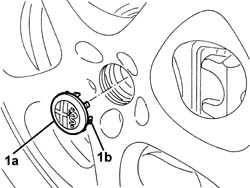
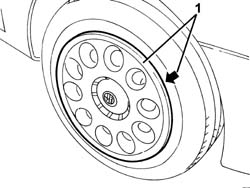
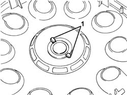

7055A86 crest on hub cap plates - r r
- Path
- Procedures > 70 FITTINGS > 7055 MOULDING AND PROTECTION > 7055A exterior mouldings > 7055A86 crest on hub cap plates - r r
- Kind
- repair procedure (removal / refitting; the operation number is the code)
- Applies to
- all engines; all production periods
- Interactive page
- https://sloeber94.github.io/elrnDB-a147/en/#/3025905
Applies to: all engines; all production periods
 Removing
Removing
 Refitting
RefittingIf the car has alloy rims, proceed as follows.
1. Using a screwdriver, prise off the crest (1a) disengaging the retainers (1b).

Applies to: all engines; all production periods
If the car has steel rims, proceed as follows.
1. Prise off the wheel hub.

Applies to: all engines; all production periods
1. Disengage the crest's inner lugs, then remove the crest.

Applies to: all engines; all production periods
Refitting
RemovingCheck that the crest is undamaged.
Fit the crest in its seating and engage the inner lugs; fit the wheel hub (for cars with steel rims).
Fit the crest in its seating and engage the retainers (for cars with alloy rims).